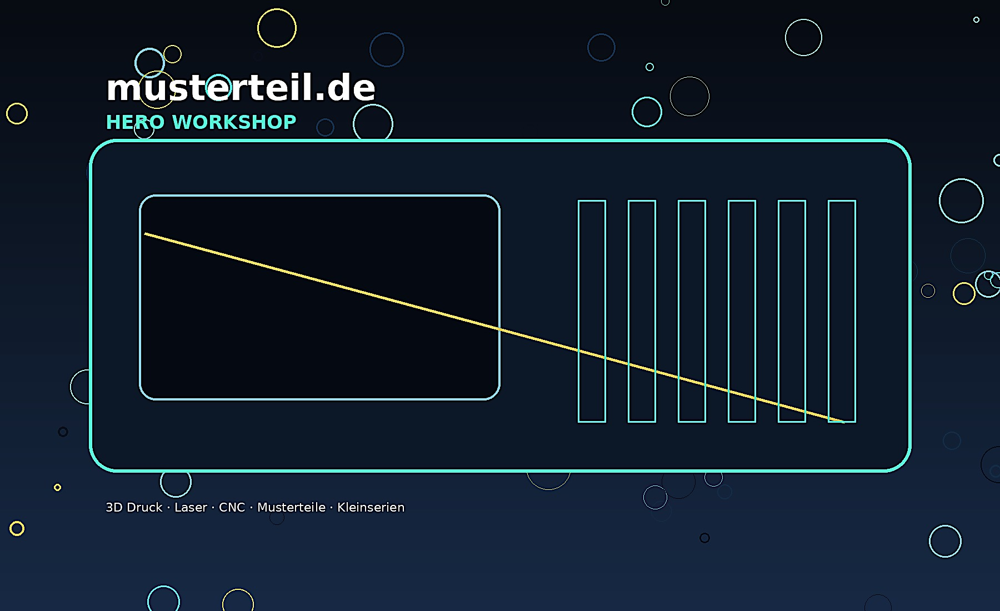

⌬
3D Druck
FDM, technische Kunststoffe, Designmodelle, Funktionsprototypen und Kleinserien.
PLAPETGPA12TPU
musterteil.de kombiniert 3D-Druck, Laserschneiden, Lasergravur und CNC-Bearbeitung fuer technische Bauteile, Designmodelle, Vorrichtungen und Kleinserien.

Von der ersten Idee bis zum montagefertigen Musterteil. Schnell, klar strukturiert und mit sauberer Dokumentation.
FDM, technische Kunststoffe, Designmodelle, Funktionsprototypen und Kleinserien.
Laserschneiden und Lasergravur fuer Acryl, Holz, Karton, Leder, Beschriftungen und Schablonen.
CNC-Fraesen fuer Plattenmaterial, Adapter, Halterungen, Vorrichtungen und einfache Aluminiumteile.

Modernes Erscheinungsbild fuer Kundenvertrauen, mit Fokus auf Anfrage und Projektklarheit.

Drei Verfahren unter einer Marke.
Einfacher Prozess fuer Kunden: Datei senden, Rueckfragen klaeren, Angebot erhalten, Bauteil produzieren.
STL, STEP, DXF, SVG oder Skizze.
Material, Toleranz, Finish und Termin.
Transparent und projektbezogen.
Fertigung, Kontrolle und Versand.